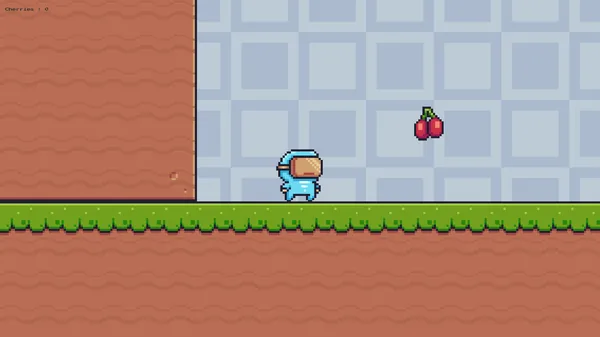
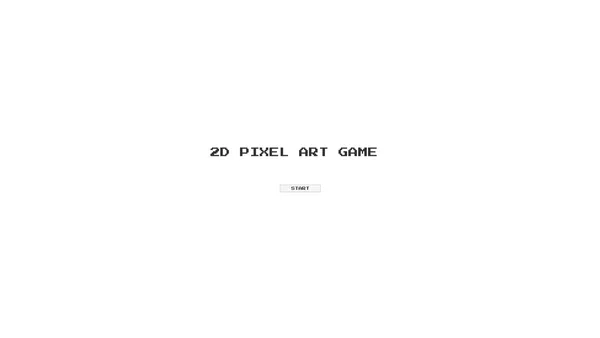
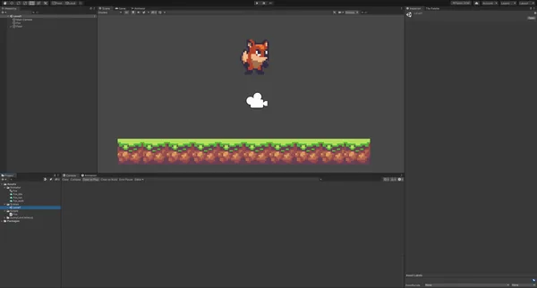

What it is
A 2D platformer prototype, built to get hands-on with the parts of Unity that a platformer actually stresses: physics, collision, input and state.
What I built
- The character controller. Gravity, jump arc and collision response tuned by hand — the bulk of the work, and the part that decides whether a platformer feels good or cheap.
- Precise collision handling for landing on platform edges and moving through tight gaps without catching.
- Level logic — interactive elements, win conditions and state transitions between levels.
- Enemy behaviour with patrol and reaction patterns.
- Power-ups granting temporary ability changes, which meant handling timed state on the player.
- UI for menus, score and an in-game HUD.
What I took from it
Platformer feel comes from small forgiveness mechanics, not from the physics settings. Coyote time and jump buffering changed how the game played more than any gravity value did.